Version Control

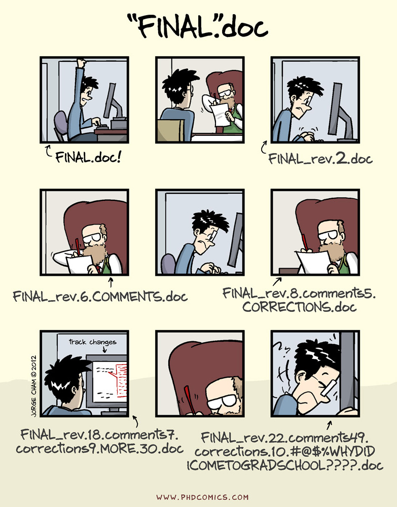
What is version control?
Version control is a system that records changes to documents, code, data, etc. through time.
It allows us to take snapshots (“commit”) of our files and to revert back to previous snapshots if desired.
It also allows us to work collaboratively on files by keeping track of who did what and finding any conflicts (e.g., if 2 people changed the same line of code).

Allison Horst: https://openscapes.org/blog/2022-05-27-github-illustrated-series/
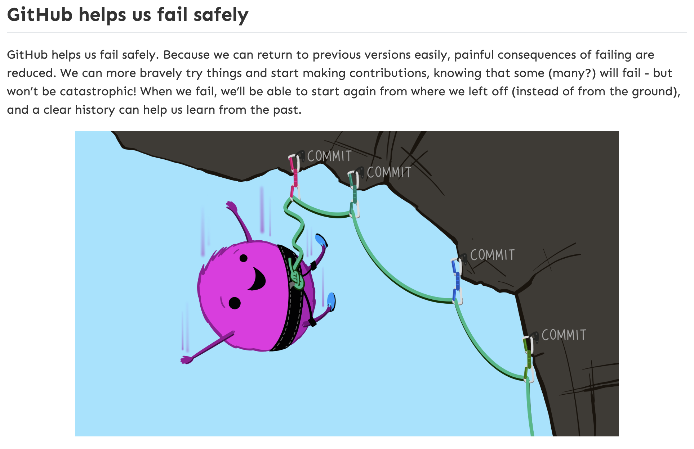
Allison Horst: https://openscapes.org/blog/2022-05-27-github-illustrated-series/
Remote vs. Local

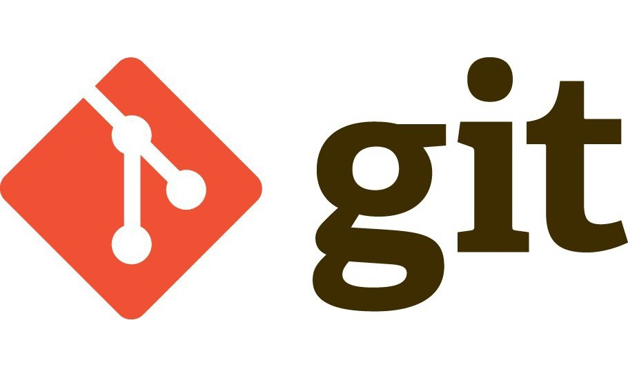
The git/GitHub Workflow
Remote Repo (GitHub)
push / pull
Local Repos (git)
add → commit → push
pull → work → add → commit
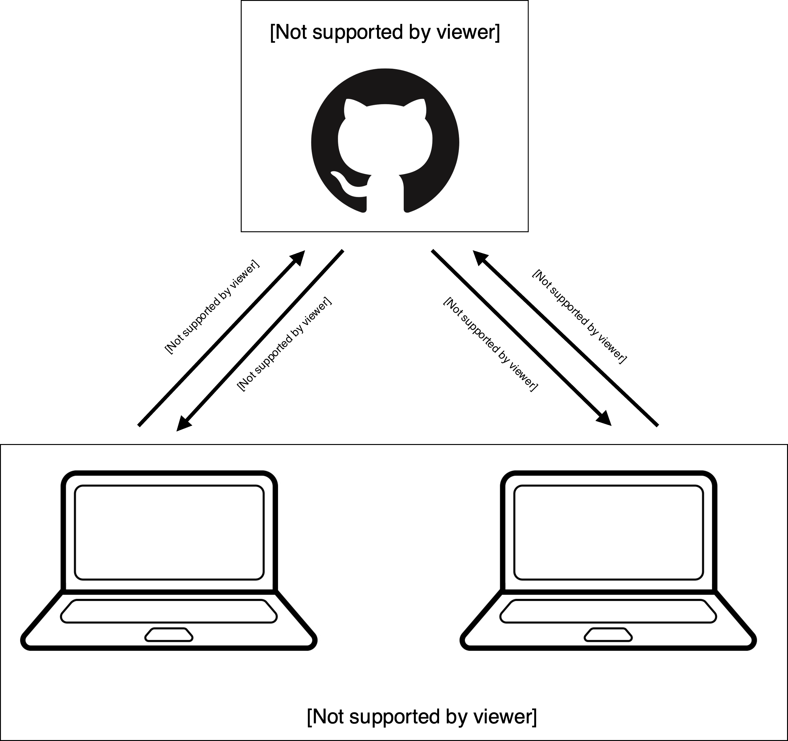
The git/GitHub Workflow

Introduce Ourselves to git
Tell git who you are (and what your GitHub account is).
Chapter 7: Introductions
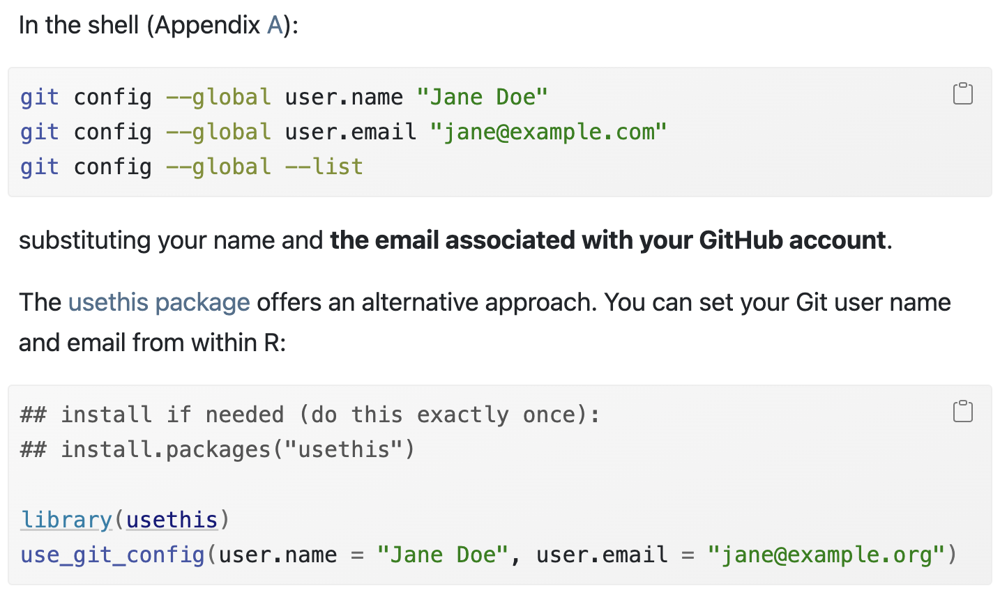
git/GitHub and RStudio
Version Control through RStudio Projects
Chapter 9: PAT for HTTPS
STEP 1 — Select no expiration
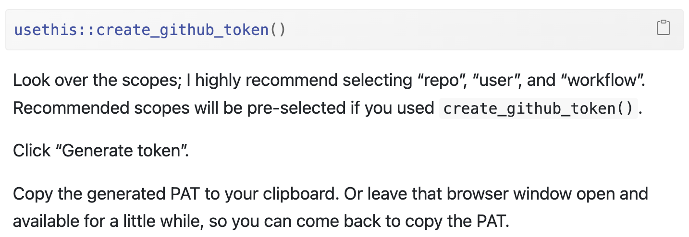
STEP 2
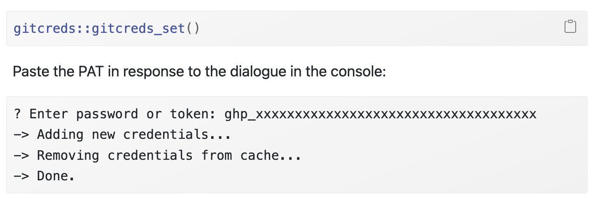
Chapter 11: Connect everything!
STEP 1: Clone the repository address
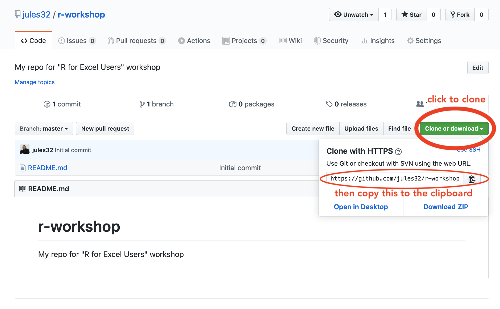
Images from: https://rstudio-conf-2020.github.io/r-for-excel/github.html#github
Chapter 11: Connect everything!
STEP 2: Create a new RStudio Project
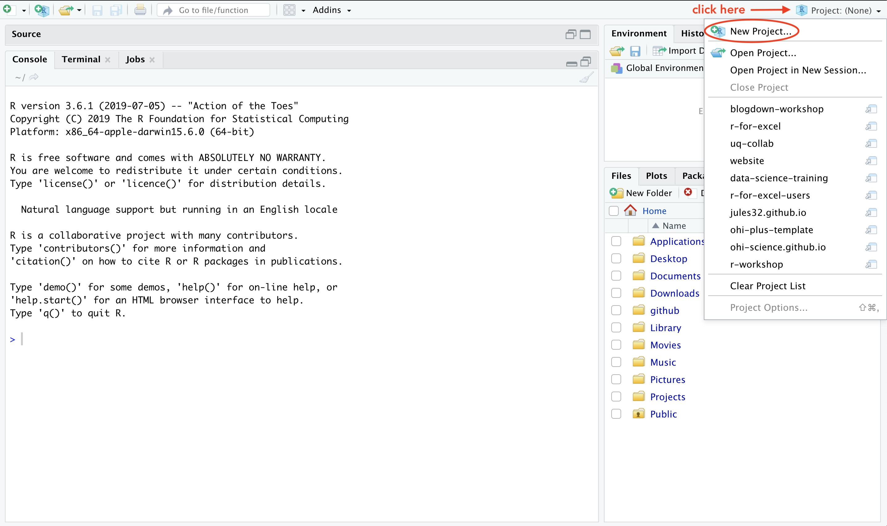
Images from: https://rstudio-conf-2020.github.io/r-for-excel/github.html#github
Chapter 11: Connect everything!
STEPS 3 and 4: Select “Version Control”, then “Git”
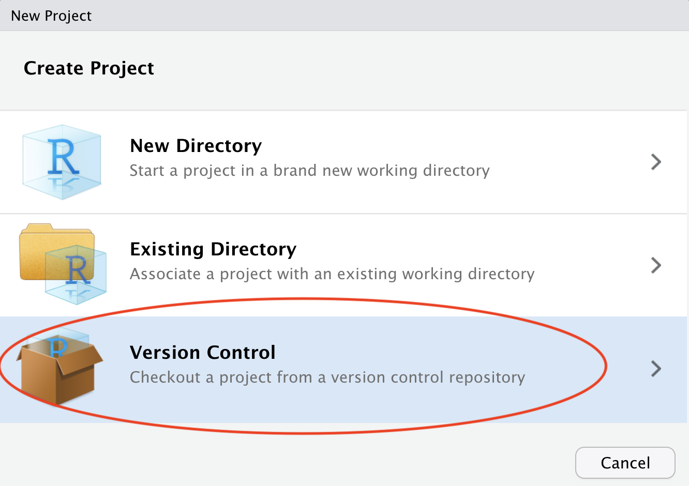
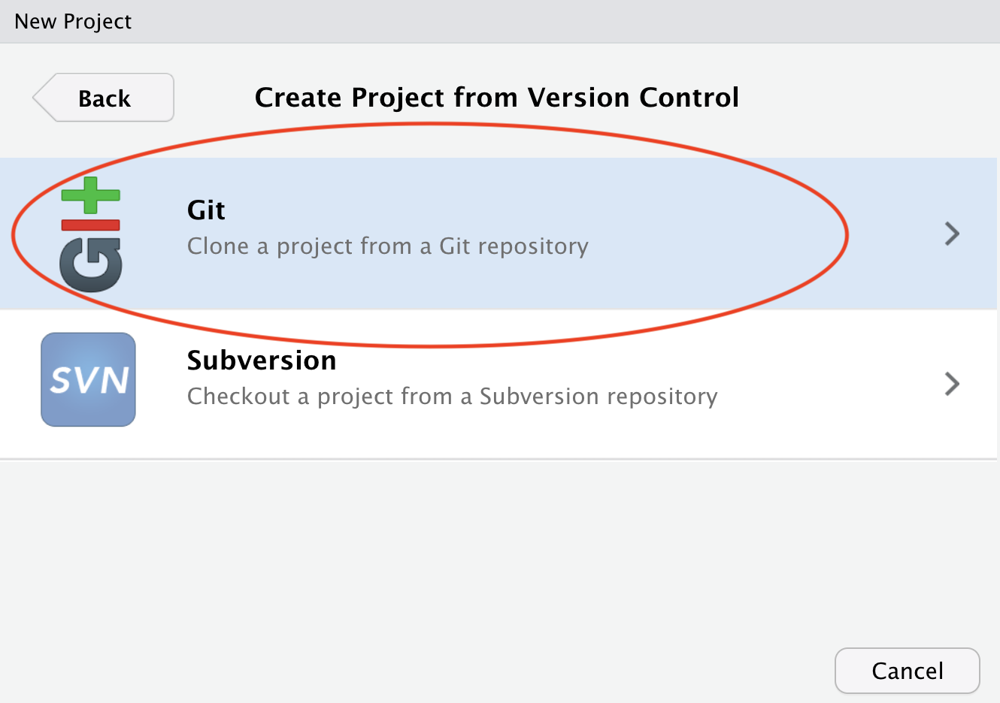
Images from: https://rstudio-conf-2020.github.io/r-for-excel/github.html#github
Chapter 11: Connect everything!
STEP 5: Paste the repo address in “Repository URL”
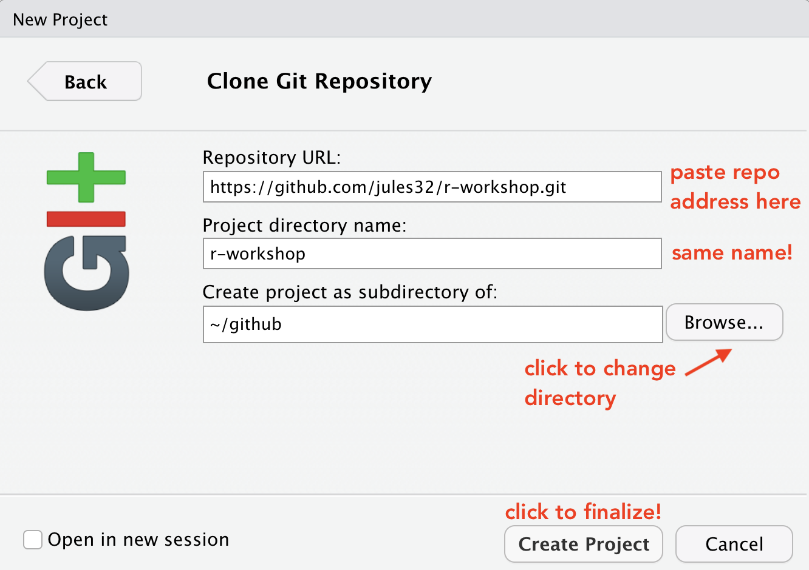
Images from: https://rstudio-conf-2020.github.io/r-for-excel/github.html#github
How to Commit Files
- Save — Save the changes in the file(s) you have been working on
- Add — Open the Commit window by clicking “Commit” in the Git tab; click the empty square next to the file to “stage” it
- Commit — Write a descriptive commit message, then click “Commit”
- Pull — Click the Pull button (blue arrow ↓); fix any merge conflicts that occur
- Push — Click the Push button (green arrow ↑) to send your committed changes to GitHub
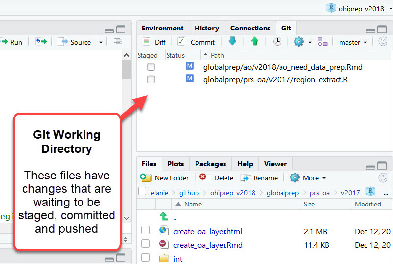
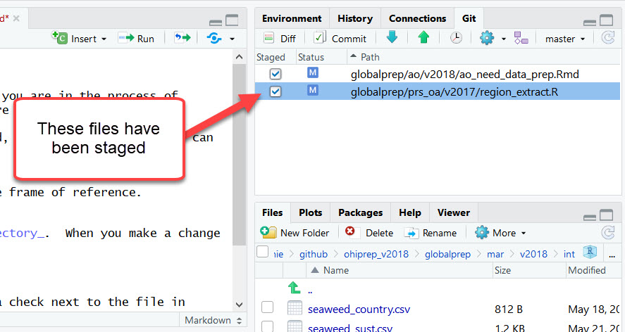
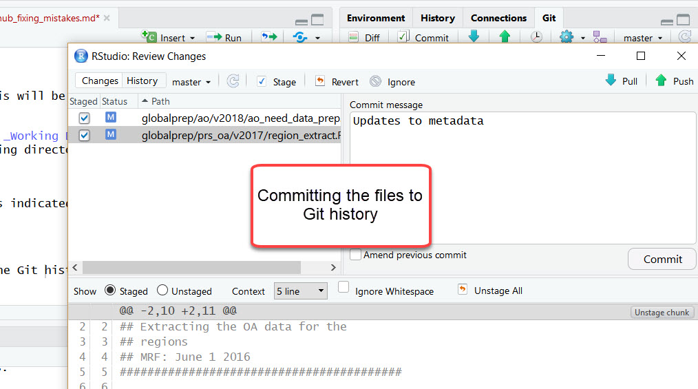
First, pull any commits from the remote repo
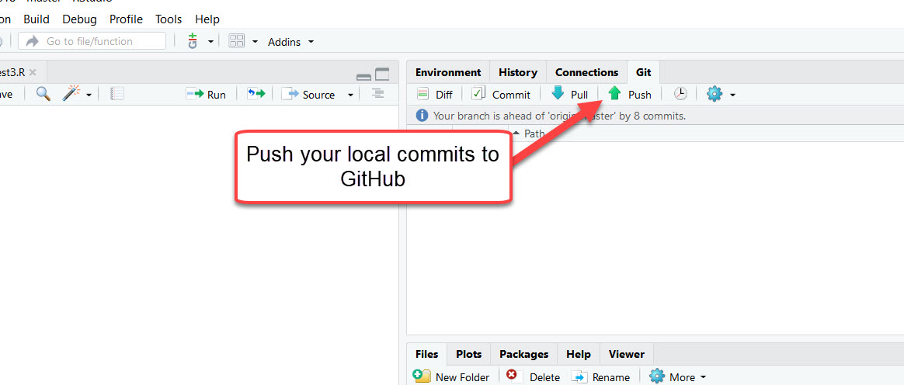
Helpful Resources
- Happy Git with R — the most helpful resource
- GitHub Docs — well-documented official documentation
- When in doubt, Google or use ChatGPT!